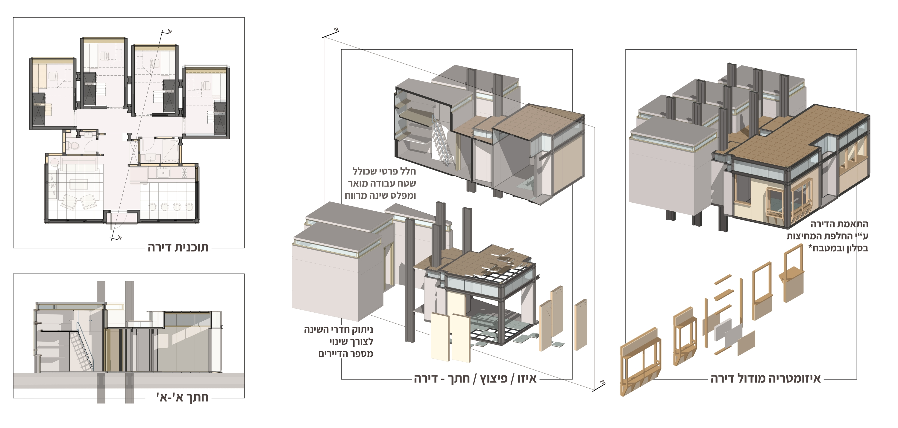
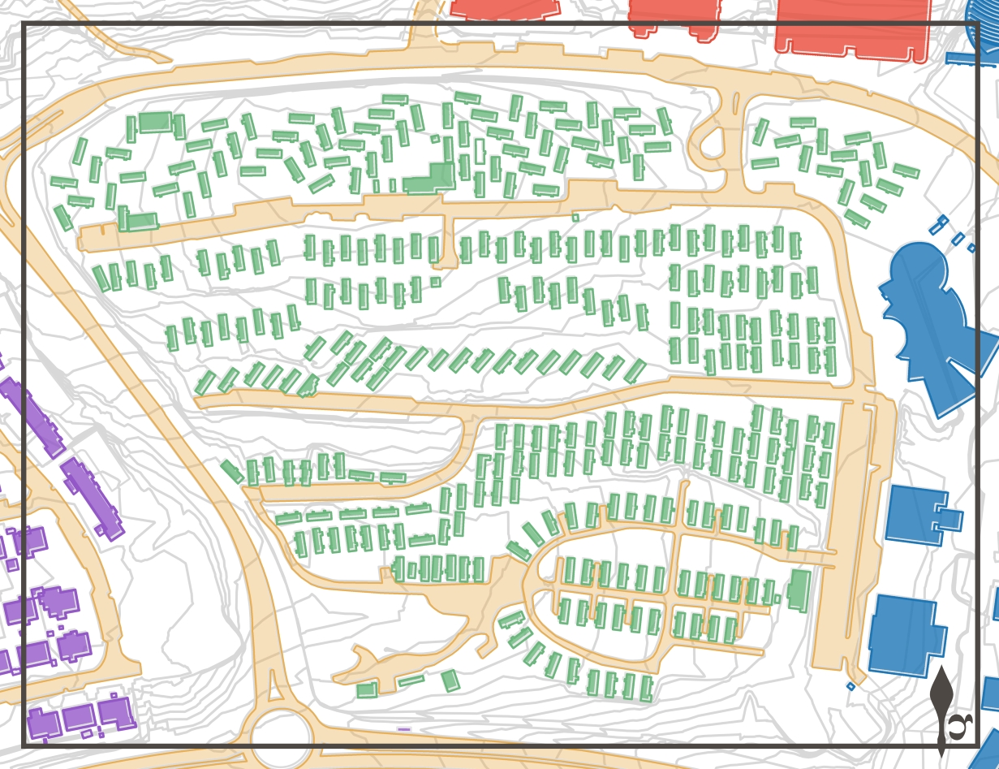
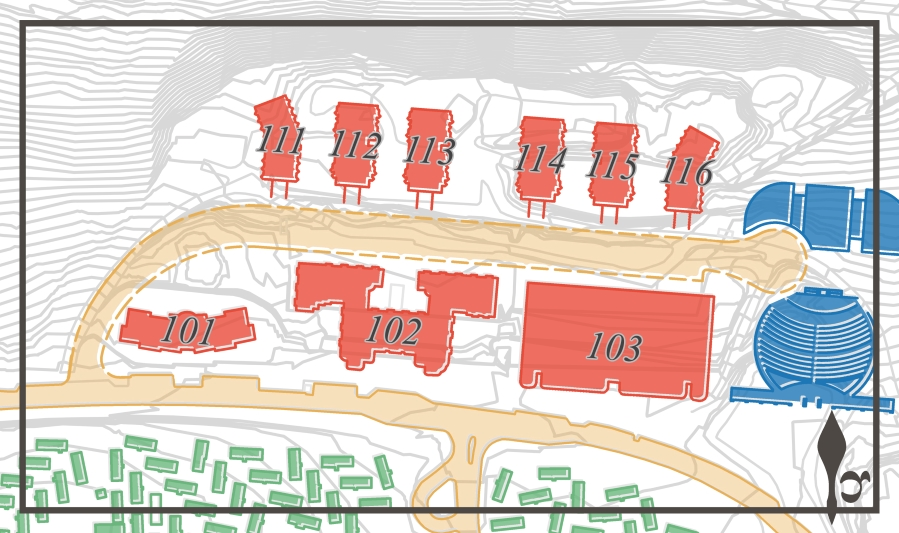
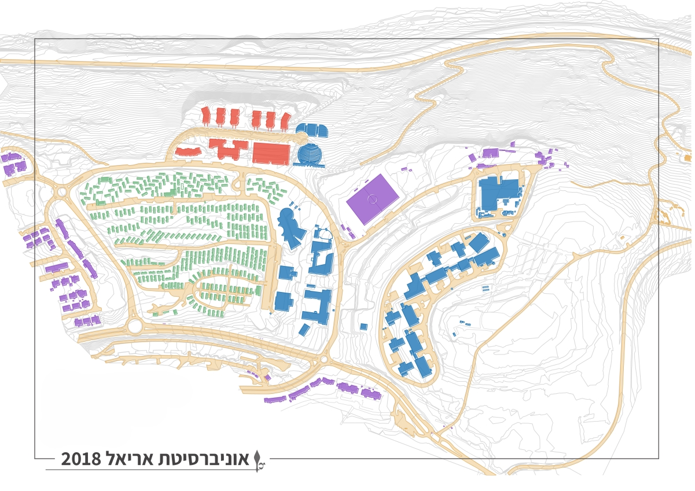
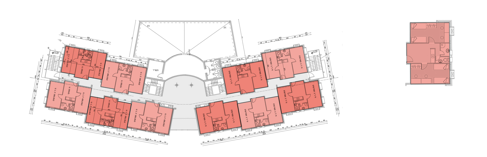
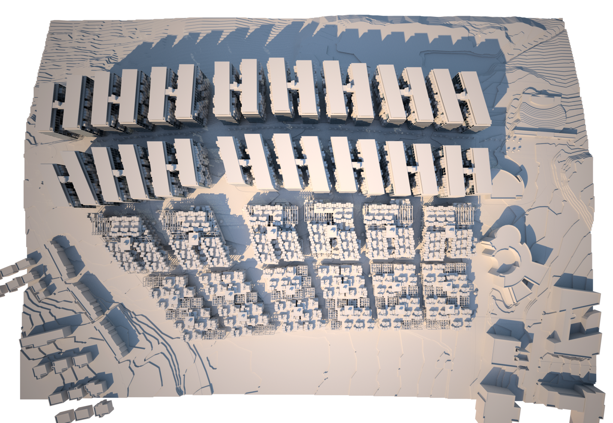
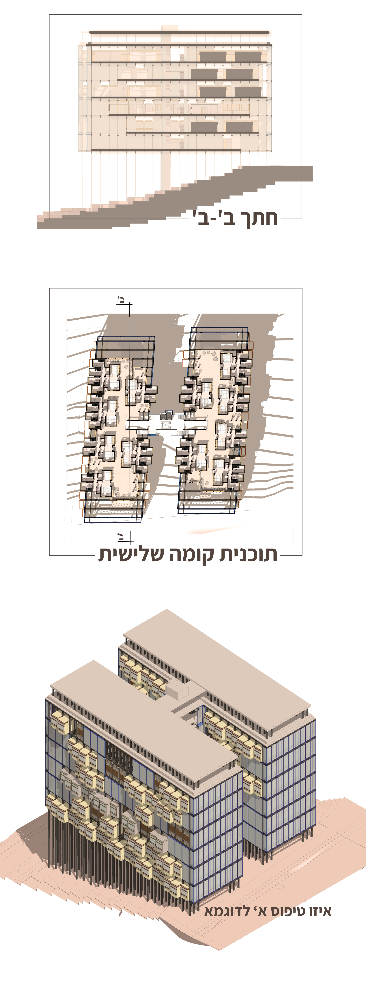

Can student housing be designed against loneliness?
A mixed-methods thesis that treats loneliness as a spatial problem: a campus-wide survey and GIS mapping locate where belonging fails, and three buildable housing typologies answer it.
The finding at its core — clustered low-rise plexes outperform corridor dormitories on every measured belonging metric.


i.The problem — loneliness on campus
Student loneliness is a spatial problem before it is a social one. This column holds chapters of any length — the rail on the left keeps orientation while reading.
Placeholder for full thesis text: background, literature gap, why typology is the lever.
ii.Field research — two compounds
Comparative study of the caravan compound and the mid-rise corridor dorms: site mapping, redrawn floor plans and a scored spatial-quality framework.


“Clustered low-rise plexes outperform corridor dormitories on every measured belonging metric.”



iii.Three typologies
The findings distill into three buildable types, each testing a different balance of privacy and encounter.


iv.The masterplan
Lab, community core and dorm clusters arranged as a connected whole.

v.Unit design
The unit as the smallest instrument of belonging.
